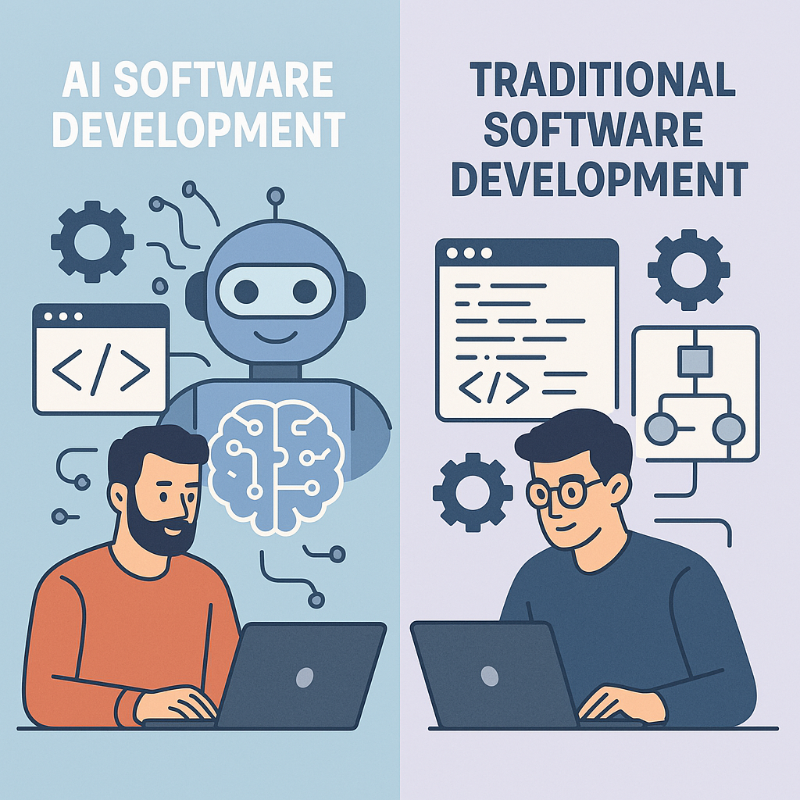

Harness 工程，不是让 AI 多写代码，而是重新发明软件工程
最近读完 OpenAI 那篇《在智能体优先的世界中利用 Codex》，我脑子里反复浮现的，不是“Codex 好强”，而是另一句话：
软件工程的主工作，正在从“写代码”，转成“设计一个让智能体稳定工作的环境”。
这件事很容易被误解。很多人看到“5 个月、100 万行代码、几乎全由 Codex 生成”，第一反应是模型更强了，程序员要下岗了。可如果你仔细读那篇文章，会发现 OpenAI 真正想说的重点是他们摸索出了一套新的工程学。
这套工程学，不是 prompt engineering，而是 harness engineering。
它关心的是怎么给智能体搭一个能持续交付、持续纠偏、持续维护的软件生产环境。
一、真正变化的，不是代码生成，而是工程师的岗位定义
在传统软件团队里，工程师最主要的职责是写代码、改代码、调代码。
但在 OpenAI 这个实验里，他们刻意设了一条非常极端的约束：人类不直接写代码。产品代码、测试、CI、文档、评审回复、内部工具，尽量都由 Codex 生成。人类工程师做的事变成了：
- 定义任务目标
- 拆解问题边界
- 设计仓库结构
- 建立约束和不变量
- 搭建验证和反馈回路
- 在必要时做判断，而不是亲自下场实现
这听上去像是在“退居二线”，其实刚好相反。
因为当代码生成速度突然放大十倍时，真正稀缺的资源就不再是“敲代码的手”，而是人类的判断力、注意力和系统设计能力。你不再被实现细节卡住，你开始被另外一些问题卡住：
- 智能体现在到底看到了什么？
- 它为什么会在这里犯错？
- 这个错误是模型能力不够，还是环境没有把约束表达清楚？
- 这个团队的共识，有多少真的进入了代码仓库，有多少只是留在 Slack 和脑子里？
这才是文章最值得反复咀嚼的地方。
未来的高杠杆工程师，未必是写代码最快的人，而更像是一个“智能体工作系统设计师”。
二、Harness 工程，本质上是在给智能体搭工作台
如果要用一句更直白的话解释 harness engineering，我会这样说：
它是为智能体准备工作台、工具链、规章制度和反馈装置。
一个成熟的 harness，至少要回答五个问题：
- 智能体去哪里找真相？
- 智能体允许怎么改，不能怎么改？
- 智能体改完以后，怎么知道自己改对了？
- 智能体发现问题后，怎么自己继续调查？
- 智能体犯错之后，坏模式如何不被复制扩散？
所以你会发现，OpenAI 那篇文章反复强调的东西，几乎都不是“生成”本身，而是这些支撑层：
- 仓库结构
AGENTS.md- 文档索引
- 执行计划
- 架构边界
- 自定义 linter
- 结构测试
- UI 可读性
- 日志、指标、trace
- PR 审核循环
- 后台清理任务
智能体不是在一个真空里写代码，它是在一个被精心设计过的生产系统里写代码。
没有这个系统，模型再强，也只是在高速度地产生随机性。
三、为什么 OpenAI 说：要给地图，不要给百科全书
文章里有一个判断，我觉得几乎可以当作 agent 时代的文档原则：
情境是稀缺资源。
很多团队下意识会觉得，既然智能体需要上下文，那就把所有规则都堆进一个巨大的 AGENTS.md。结果通常会很糟：
- 文件太长，真正和当前任务相关的上下文反而被挤掉
- 所有规则都显得同样重要，最后等于没有重点
- 文档很快过时，变成漂亮但失效的“假知识”
- 没法机械检查覆盖率、新鲜度和交叉引用
OpenAI 的做法是反过来的：
AGENTS.md只做地图，不做百科全书- 真正的知识分散在结构化的
docs/里 - 架构、产品规范、设计原则、执行计划、技术债都版本化
- 让智能体从一个小切口进入，再按索引逐步展开
这其实是在把“给上下文”升级为“设计上下文的加载方式”。
以前我们写文档，默认读者是人；现在开始要考虑另一个读者：会在运行时按需检索、按路径导航、按约束执行的智能体。
所以好文档的标准也变了。不是越全越好，而是：
- 可定位
- 可引用
- 可校验
- 可拆分
- 可版本化
- 可被后续智能体继续使用
这是一个很大的观念转变。
四、在 Agent-First 的代码库里，“看不见”就等于“不存在”
这是原文里最狠、也最现实的一句话的延伸：
如果信息不在代码仓库里，对智能体来说，它就不存在。
很多团队真正的规则并不在 repo 里，而散落在这些地方：
- 某次 Slack 讨论
- 某个同事口头讲过的经验
- Google Docs 里的旧设计稿
- 某个老员工“默认大家都知道”的约定
这些内容对人类团队还能勉强运作，因为人会脑补、会问、会记忆、会容忍模糊。但对智能体不行。智能体只对它当前可访问的东西负责。
这意味着，如果你想让智能体稳定产出，就必须把原本漂浮在组织空气里的那些“隐性知识”，尽可能沉淀成 repo 内的显式工件：
- Markdown 文档
- 架构说明
- 结构规则
- 生成脚本
- 检查器
- 可执行计划
这本质上是在把组织知识“编译”成机器可消费的形态。
以前我们总说“代码即文档”并不现实。现在更现实的说法是：
代码仓库必须成为智能体的记忆系统。
五、为什么架构约束在这个时代不是负担，而是杠杆
很多人天然反感强约束，觉得那是大团队病，是流程崇拜，是过早设计。
但文章里讲得很清楚：对于编码智能体来说，严格边界不是减速器，而是加速器。
原因很简单。
一个没有清晰边界的系统，对人类工程师来说只是“有点乱”；对智能体来说，往往是“高概率漂移”。因为智能体特别擅长模式补全，一旦仓库里已经有几种不一致的写法，它就会继续复制这些不一致。
所以 OpenAI 的方法不是到处手把手规定实现细节，而是先把少数关键不变量钉死：
- 依赖方向必须固定
- 领域分层必须固定
- 横切关注点只能从明确入口进入
- 边界处必须解析数据形状
- 日志、命名、文件大小、可靠性要求都可被静态检查
这背后的思想很值得借鉴：
少管理实现，多管理边界。
只要边界是清楚的、可检查的、可自动纠正的，智能体在边界内部反而可以有更大自由。你不用盯着每一行代码，但你要把“什么绝对不能发生”写进系统里。
这比口头评审有效得多，因为规则一旦编码成 lint、结构测试和 CI，它就能在每一次生成里重复生效。
六、所谓“智能体可读性”，其实是在重写我们对好代码的判断标准
文章里一个很容易被忽略、但非常重要的观点是：他们先为 Codex 的可读性优化，再考虑人类风格统一。
这听上去有点反直觉，但很合理。
因为在一个主要由智能体生成、维护、修复的代码库里，下一次改这段代码的，很可能还是智能体。于是“好代码”的标准就不再只是“像资深工程师手写”，而更偏向：
- 是否容易导航
- 是否行为可预测
- 是否边界清晰
- 是否方便验证
- 是否容易被下一次运行继续修改
这并不是说人类审美不重要，而是说审美的位置后移了。
先保证代码对系统、对验证机制、对后续智能体是清晰的，再去追求风格上的优雅。只要代码正确、可维护、可继续演进，它就已经足够好。
这个判断很“工程”，也很冷静。
七、真正让智能体变强的，不是多给几句提示词，而是让它看见 UI、日志和指标
OpenAI 文章里我最认同的一点，是他们把 QA 和可观测性直接变成了智能体的工作界面。
这很关键。因为如果智能体只能读代码，它就只能停留在“静态推理”；可一旦它还能读：
- DOM 快照
- 页面截图
- 浏览器运行时事件
- 日志
- 指标
- trace
它就从“会写代码”升级成了“能闭环修问题”的执行者。
这两者差别极大。
前者像一个会补全文本的模型，后者开始接近一个真正的软件操作员：
- 复现 bug
- 记录故障现象
- 定位异常路径
- 提交修复
- 重启验证
- 再观察结果
- 继续迭代
一旦这个环跑起来，很多过去必须由人工完成的事情，就能被部分自动接手。于是瓶颈自然会从“编码能力”转移到“反馈系统是否完整”。
所以如果一个团队真的想在内部推 agent coding，最优先的投资往往不是再研究一百种 prompt 模板，而是把这些东西接给智能体：
- 可启动的本地环境
- 可隔离的 worktree
- 稳定的测试入口
- 浏览器自动化能力
- 日志和指标查询能力
- 可回放、可比较、可验证的结果
这才是 harness 的骨架。
八、吞吐量一变，很多“正确流程”都会变
文章里还有一个很现实、也很容易引起争议的结论：
当智能体吞吐量远超人类注意力时，等待成本会开始高于纠错成本。
这意味着什么？
意味着有些传统工程习惯，可能要重新审视：
- PR 不该长时间堆积
- 阻塞性门禁要减少
- 偶发失败不该无限放大
- 合并策略要偏向快速纠偏，而不是假设每次都一次完美
这并不是鼓励鲁莽，也不是说质量不重要。真正的前提是：你已经有一套足够强的回滚、重跑、验证、观测和持续修正机制。
如果没有这些基础设施，放松门禁只是更快地产生事故。
所以更准确的说法不是“agent 时代不需要流程”，而是：
agent 时代需要的是另一种流程，一种围绕高吞吐量持续纠偏而设计的流程。
九、智能体最危险的问题，不是犯错，而是高速复制坏模式
OpenAI 没有把这篇文章写成乐观宣传稿，这点我很喜欢。
他们明确承认，完全自主的智能体会带来新的熵。它会继承仓库里已有的模式，好的会继承，坏的也会继承；一致的会放大，不一致的也会放大。
这意味着，在 agent-heavy 的代码库里，技术债的形成速度也可能更快。
所以他们后来不再靠人工每周大扫除，而是把“黄金原则”直接编码进去，然后用后台任务持续做清理和重构。这其实是一个特别经典的系统工程思路：
不要指望人持续手工维持秩序，要把秩序写进系统。
这和垃圾回收的比喻很贴切。真正危险的不是某一处代码写丑了，而是坏模式一旦进入主干，后续一百个任务都会继续沿着那个方向补全。
所以你必须有持续的“反熵机制”：
- 周期性扫描坏模式
- 自动发起小型重构 PR
- 更新质量分数
- 把审美和判断沉淀成规则
- 让修正比扩散更快
这可能是很多团队最晚才会补的环节，但实际上应该很早开始做。
十、这篇文章真正给我们的启发，不是“照着抄”，而是认清主战场已经变了
我不觉得大多数团队今天就能完整复制 OpenAI 的那套做法。
文章自己也说得很克制：很多能力高度依赖他们已经构建好的仓库结构、工具链和反馈系统，不能假设换个团队就自然成立。
但这篇文章的价值，本来就不在于提供一份可以原样照搬的 SOP，而在于它点破了一个方向：
未来软件工程的核心竞争力，会越来越多地体现在环境设计、约束建模、知识组织和反馈闭环，而不是单点编码速度。
也就是说，真正值得问的问题，不再是：
“这个模型能不能替我把函数写出来？”
而是：
- 我的仓库是不是 agent-readable？
- 我的规范是不是可执行、可验证，而不是只存在于嘴上？
- 我的系统有没有给智能体足够的观察能力和纠偏能力？
- 我的团队是不是还在用人类低吞吐量时代的流程，去管理智能体高吞吐量时代的生产？
这些问题想明白了，才算真正开始理解 harness engineering。
结语
如果只看表面，这篇文章像是在讲一场“零人工编码”的实验。
但如果往深一点看，它其实是在重新定义一件更底层的事：
当写代码不再是最稀缺的能力时，软件工程究竟还剩下什么？
OpenAI 给出的答案是：
还剩下结构，剩下约束，剩下判断，剩下反馈回路，剩下把混乱变成可执行秩序的能力。
这也是为什么我觉得 harness engineering 值得认真看。它不是一个新名词，而是在提醒我们，工程师的价值并没有消失，只是从“亲手实现”迁移到了“设计让实现能够自动发生的系统”。
下一阶段最厉害的团队，未必是提示词写得最花的团队，而是那些能把 repo、文档、测试、观测、评审和清理机制组织成一个完整生产系统的团队。
那时候，代码只是产物。
真正的产品，是这套能持续驱动智能体工作的工程机器。